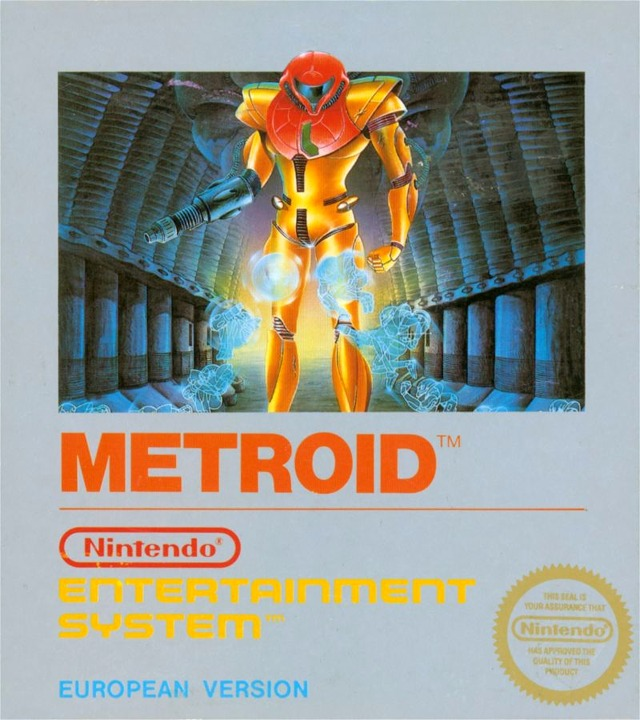

Nintendo Entertainment System
Console 8-bit da Nintendo, contraparte ocidental do Famicom (lançado no Japão em 1983). Redesign em cinza/branco com slot frontal coberto e controles removíveis. Lançado nos EUA em 18/10/1985 (teste em NY, depois nacional em 1986), expandiu para Europa/Austrália (1986-87), Brasil (1993) e outros até Polônia (1994). Vendeu 61,91 milhões de unidades (com Famicom) e revitalizou a indústria pós-crise de 1983 via controle de qualidade e periféricos.
Veja um vídeo sobre o mundo do "nintendinho!"Super Mario Bros

Super Mario Bros. (1985): Jogo de plataforma dirigido por Shigeru Miyamoto. Você controla Mario (ou Luigi) em fases laterais no Reino do Cogumelo para resgatar a Princesa Toadstool de Bowser, coletando power-ups como Super Cogumelo e Flor de Fogo. Primeiro da série, ficou famoso pelos controles precisos, tutorial no Mundo 1-1 e trilha icônica de Koji Kondo. Lançado no Japão (1985), EUA (1986) e PAL (1987); vendeu mais de 58 milhões de cópias e ajudou a reviver a indústria dos videogames.
The Legend of Zelda

The Legend of Zelda é uma série criada por Shigeru Miyamoto e Takashi Tezuka, desenvolvida pela Nintendo desde 1986. A história gira em torno de Link, a Princesa Zelda e o vilão Ganon, na luta para proteger o reino de Hyrule e o Triforce, uma relíquia sagrada que concede desejos. Com mais de 20 jogos principais, além de spin-offs, série animada (1989) e mangás, é uma das franquias mais importantes da história dos videogames.
Metroid

Metroid (1986, Nintendo): Primeiro jogo da série, onde Samus Aran explora o planeta Zebes para recuperar os Metroids roubados pelos Space Pirates, que pretendem usá-los como armas. Desenvolvido pela Nintendo R&D1 e Intelligent Systems, destacou-se pelo foco em exploração e power-ups, criando o gênero "Metroidvania". Também foi pioneiro por apresentar uma protagonista feminina. Recebeu remakes como Metroid: Zero Mission (2004) e relançamentos no Switch Online.
Menu